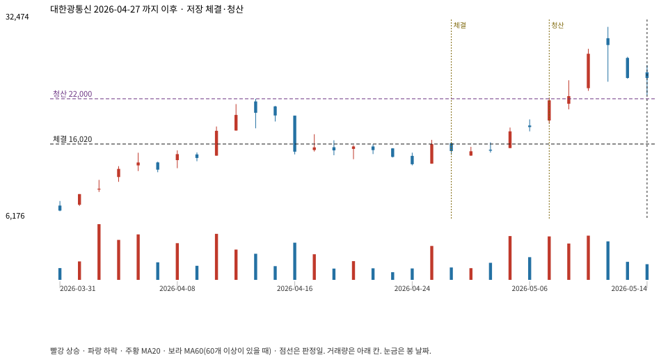

계좌를 다시 돌리지 않았다. 아래는 저장된 주문·체결·청산·비용·손익이다.

{
"case_id": "9a97e143b7ecf58a",
"status": "closed",
"trade": {
"symbol": "010170.KQ",
"signal_date": "2026-04-27",
"quantity": 340,
"entry": 16020,
"stop": 12695,
"target": 22000,
"planned_risk": 1142419.0918499997,
"reserved_cash": 5452246.8,
"fill": {
"date": "2026-04-28",
"price": 16020,
"fee": 5446.8
},
"exit": {
"date": "2026-05-07",
"price": 22000,
"reason": "target",
"net_pnl": 2020273.2000000002,
"ambiguous_bar": false
}
},
"cost": "research fee 10bp each side, slippage 5bp; amounts below are the stored ledger, not a new run",
"chart": "c\/9a97e143b7ecf58a.svg"
}